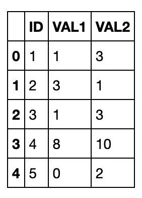
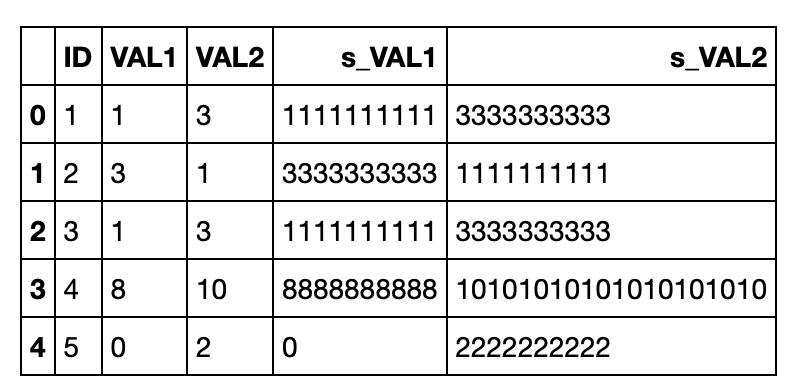
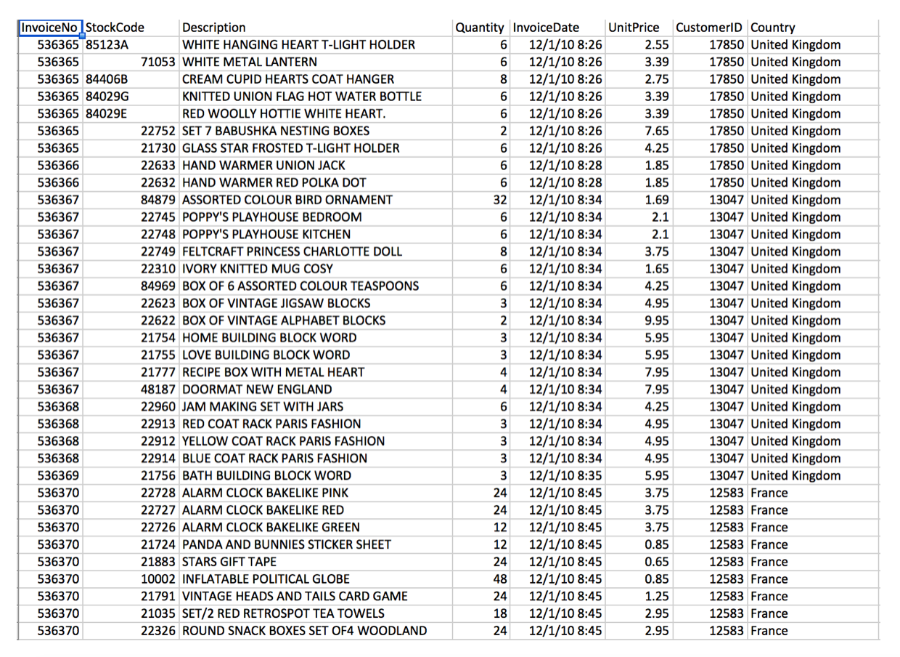
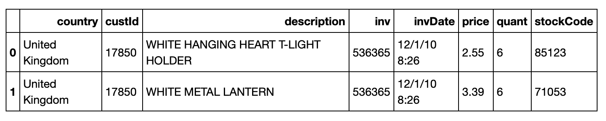
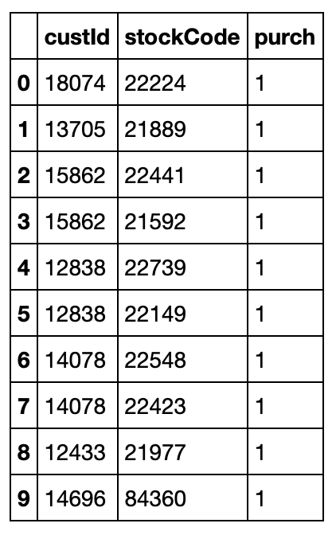
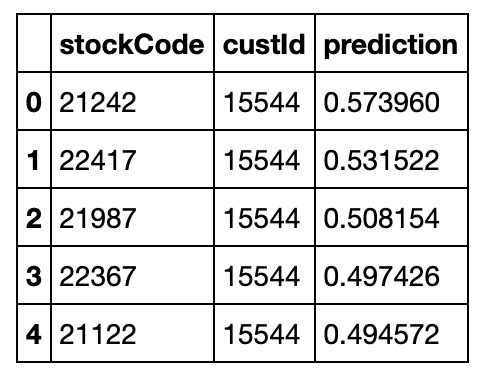

Basic concepts
Work with the SparkContext object
The Spark driver application uses the SparkContext object to allow a programming interface to interact with the driver application. The SparkContext object tells Spark how and where to access a cluster.
1 | from pyspark import SparkContext, SparkConf |
Work with Resilient Distributed Datasets
Spark uses an abstraction for working with data called a Resilient Distributed Dataset (RDD). An RDD is a collection of elements that can be operated on in parallel. RDDs are immutable, so you can’t update the data in them. To update data in an RDD, you must create a new RDD. In Spark, all work is done by creating new RDDs, transforming existing RDDs, or using RDDs to compute results. When working with RDDs, the Spark driver application automatically distributes the work across the cluster.
You can construct RDDs by parallelizing existing Python collections (lists), by manipulating RDDs, or by manipulating files in HDFS or any other storage system.
You can run these types of methods on RDDs:
- Actions: query the data and return values
- Transformations: manipulate data values and return pointers to new RDDs.
1 | # Create a Python collection of the numbers 1 - 10 |
Manipulate data in RDDs
Remember that to manipulate data, you use transformation functions.
Here are some common Python transformation functions that you’ll be using in this notebook:
map(func): returns a new RDD with the results of running the specified function on each elementfilter(func): returns a new RDD with the elements for which the specified function returns truedistinct([numTasks])): returns a new RDD that contains the distinct elements of the source RDDflatMap(func): returns a new RDD by first running the specified function on all elements, returning 0 or more results for each original element, and then flattening the results into individual elements
You can also create functions that run a single expression and don’t have a name with the Python lambda keyword. For example, this function returns the sum of its arguments:lambda a , b : a + b.
Update numeric values
Run the map() function with the lambda keyword to replace each element, X, in your first RDD (the one that has numeric values) with X+1. Because RDDs are immutable, you need to specify a new RDD name.
Be careful with the collect method! It returns all elements of the RDD to the driver. Returning a large data set might be not be very useful. No-one wants to scroll through a million rows!
1 | x_nbr_rdd_2 = x_nbr_rdd.map(lambda x: x+1) |
Add numbers in an array
An array of values is a common data format where multiple values are contained in one element. You can manipulate the individual values if you split them up into separate elements.
Create an array of numbers by including quotation marks around the whole set of numbers. If you omit the quotation marks, you get a collection of numbers instead of an array.
1 | X = ["1,2,3,4,5,6,7,8,9,10"] |
Split and count text strings
1 | Words = ["Hello Human. I'm Spark and I love running analysis on data."] |
Count words with a pair RDD
A common way to count the number of instances of words in an RDD is to create a pair RDD. A pair RDD converts each word into a key-value pair: the word is the key and the number 1 is the value. Because the values are all 1, when you add the values for a particular word, you get the number of instances of that word.
1 | z = ["First,Line", "Second,Line", "and,Third,Line"] |
Filter data
The filter command creates a new RDD from another RDD based on a filter criteria. The filter syntax is:.filter(lambda line: "Filter Criteria Value" in line)
1 | words_rd3 = z_str_rdd_split_flatmap.filter(lambda line: "Second" in line) |
Querying data
Enable SQL processing
The preferred method to enable SQL processing with Spark 2.0 is to use the new SparkSession object, but you can also create a SQLContext object.
Use the predefined Spark Context, sc, which contains the connection information for Spark, to create an SQLContext:
1 | from pyspark.sql import SQLContext |
Create a DataFrame
Instead of creating an RDD to read the file, you’ll create a Spark DataFrame. Unlike an RDD, a DataFrame creates a schema around the data, which supplies the necessary structure for SQL queries. A self-describing format like JSON is ideal for DataFrames, but many other file types are supported, including text (CSV) and Parquet.
Create a DataFrame:1
example1_df = sqlContext.read.json("world_bank.json.gz")
Create a table
SQL statements must be run against a table. Create a table that’s a pointer to the DataFrame:
1 | example1_df.registerTempTable("world_bank") |
Run SQL queries
You must define a new DataFrame for the results of the SQL query and put the SQL statement inside the sqlContext.sql() method.
Run the following cell to select all columns from the table and print information about the resulting DataFrame and schema of the data:
1 | temp_df = sqlContext.sql("select * from world_bank") |
Display query results with a pandas DataFrame
1 | import pandas as pd |
Run a group by query
1 | query = """ |
Run a subselect query
1 | query = """ |
Convert RDDs to DataFrames
If you want to run SQL queries on an existing RDD, you must convert the RDD to a DataFrame. The main difference between RDDs and DataFrames is whether the columns are named.
You’ll create an RDD and then convert it to a DataFrame in two different ways:
- Apply a schema
- Create rows with named columns
Create a simple RDD
1 | import random |
Apply a schema
You’ll use the StructField method to create a schema object that’s based on a string, apply the schema to the RDD to create a DataFrame, and then create a table to run SQL queries on.
Define your schema columns as a string:
1 | from pyspark.sql.types import * |
Assign header information with the StructField method and create the schema with the StructType method:
1 | fields = [StructField(field_name, StringType(), True) for field_name in schemaString.split()] |
Apply the schema to the RDD with the createDataFrame method
1 | schemaExample = sqlContext.createDataFrame(rdd_example2, schema) |
Register the DataFrame as a table1
2# Register the DataFrame as a table
schemaExample.registerTempTable("example2")
View the data
1 | print (schemaExample.collect()) |
Run a simple SQL query
1 | sqlContext.sql("select * from example2").toPandas() |

Create rows with named columns
You’ll create an RDD with named columns and then convert it to a DataFrame and a table.
Create a new RDD and specify the names of the columns with the map method:
1 | from pyspark.sql import Row |
Convert rdd_example3 to a DataFrame and register an associated table
1 | df_example3 = rdd_example3.toDF() |
Run a simple SQL query
1 | sqlContext.sql("select * from example3").toPandas() |
Join tables
1 |
|
Create SQL functions
You can create functions that run in SQL queries.
First, create a Python function and test it:
1 | def simple_function(v): |
Next, register the function as an SQL function with the registerFunction method:
1 | sqlContext.registerFunction("simple_function", simple_function) |
Now run the function in an SQL Statement:
1 | query = """ |

The values in the VAL1 and VAL2 columns look like strings (10 characters instead of a number multiplied by 10). That’s because string is the default data type for columns in Spark DataFrames.
Convert a pandas DataFrame to a Spark DataFrame
Although pandas DataFrames display data in a friendlier format, Spark DataFrames can be faster and more scalable.
You’ll get a new data set, create a pandas DataFrame for it, and then convert the pandas DataFrame to a Spark DataFrame.
1 |
|
Spark machine learning
The Spark machine learning library makes practical machine learning scalable and easy. The library consists of common machine learning algorithms and utilities, including classification, regression, clustering, collaborative filtering (this notebook!), dimensionality reduction, lower-level optimization primitives, and higher-level pipeline APIs.
The library has two packages:
- spark.mllib contains the original API that handles data in RDDs. It’s in maintenance mode, but fully supported.
- spark.ml contains a newer API for constructing ML pipelines. It handles data in DataFrames. It’s being actively enhanced.
Alternating least squares algorithm
The alternating least squares (ALS) algorithm provides collaborative filtering between customers and products to find products that the customers might like, based on their previous purchases or ratings.
The ALS algorithm creates a matrix of all customers versus all products. Most cells in the matrix are empty, which means the customer hasn’t bought that product. The ALS algorithm then fills in the probability of customers buying products that they haven’t bought yet, based on similarities between customer purchases and similarities between products. The algorithm uses the least squares computation to minimize the estimation errors, and alternates between fixing the customer factors and solving for product factors and fixing the product factors and solving for customer factors.
You don’t, however, need to understand how the ALS algorithm works to use it! Spark machine learning algorithms have default values that work well in most cases.
Get the data
The data set contains the transactions of an online retailer of gift items for the period from 01/12/2010 to 09/12/2011. Many of the customers are wholesalers.
You’ll be using a slightly modified version of UCI’s Online Retail Data Set.
Here’s a glimpse of the data:

1 | rm 'OnlineRetail.csv.gz' -f |
1 |
|
Prepare and shape the data
It’s been said that preparing and shaping data is 80% of a data scientist’s job. Having the right data in the right format is critical for getting accurate results.
To get the data ready, complete these tasks:
- Format the data
- Clean the data
- Create a DataFrame
- Remove unneeded columns
Format the data
Remove the header from the RDD and split the string in each row with a comma:
1 | header = loadRetailData.first() |
Clean the data
Remove the rows that have incomplete data. Keep only the rows that meet the following criteria:
- The purchase quantity is greater than 0
- The customer ID not equal to 0
- The stock code is not blank after you remove non-numeric characters
1 | import re |
Create a DataFrame
First, create an SQLContext and map each line to a row:
1 | from pyspark.sql import SQLContext, Row |
Create a DataFrame and show the inferred schema:1
2
3
4
5
6
7
8
9
10
11
12retailDf = sqlContext.createDataFrame(loadRetailData)
print (retailDf.printSchema())
# root
# |-- country: string (nullable = true)
# |-- custId: long (nullable = true)
# |-- description: string (nullable = true)
# |-- inv: long (nullable = true)
# |-- invDate: string (nullable = true)
# |-- price: double (nullable = true)
# |-- quant: long (nullable = true)
# |-- stockCode: long (nullable = true)
Register the DataFrame as a table so that you can run SQL queries on it and show the first two rows:
1 | retailDf.registerTempTable("retailPurchases") |

Remove unneeded columns
The only columns you need are custId, stockCode, and a new column, purch, which has a value of 1 to indicate that the customer purchased the product:
1 | query = """ |

Split the data into three sets
You’ll split the data into three sets:
- a testing data set (10% of the data)
- a cross-validation data set (10% of the data)
- a training data set (80% of the data)
Split the data randomly and create a DataFrame for each data set:
1 | testDf, cvDf, trainDf = retailDf.randomSplit([.1,.1,.8],1) |
Build recommendation models
Machine learning algorithms have standard parameters and hyperparameters. Standard parameters specify data and options. Hyperparameters control the performance of the algorithm.
The ALS algorithm has these hyperparameters:
- The rank hyperparameter represents the number of features. The default value of rank is 10.
- The maxIter hyperparameter represents the number of iterations to run the least squares computation. The default value of maxIter is 10.
Use the training DataFrame to train three models with the ALS algorithm with different values for the rank and maxIter hyperparameters. Assign the userCol, itemCol, and ratingCol parameters to the appropriate data columns. Set the implicitPrefs parameter to true so that the algorithm can predict latent factors.
1 | from pyspark.ml.recommendation import ALS |
Test the models
First, test the three models on the cross-validation data set, and then on the testing data set.
You’ll know the model is accurate when the prediction values for products that the customers have already bought are close to 1.
Clean the cross validation data set
Remove any of the customers or products in the cross-validation data set that are not in the training data set:
1 | from pyspark.sql.functions import UserDefinedFunction |
Run the models on the cross-validation data set
Run the model with the cross-validation DataFrame by using the transform function and print the first two rows of each set of predictions:
1 | predictions1 = model1.transform(cvDf) |
Calculate the accuracy for each model
You’ll use the mean squared error calculation to determine accuracy by comparing the prediction values for products to the actual purchase values. Remember that if a customer purchased a product, the value in the purch column is 1. The mean squared error calculation measures the average of the squares of the errors between what is estimated and the existing data. The lower the mean squared error value, the more accurate the model.
For all predictions, subtract the prediction from the actual purchase value (1), square the result, and calculate the mean of all of the squared differences:
1 | meanSquaredError1 = predictions1.rdd.map(lambda line: (line.purch - line.prediction)**2).mean() |
The third model (model3) has the lowest mean squared error value, so it’s the most accurate.
Notice that of the three models, model3 has the highest values for the hyperparameters. At this point you might be tempted to run the model with even higher values for rank and maxIter. However, you might not get better results. Increasing the values of the hyperparameters increases the time for the model to run. Also, you don’t want to overfit the model so that it exactly fits the original data. In that case, you wouldn’t get any recommendations! For best results, keep the values of the hyperparameters close to the defaults.
Confirm the best model
Now run model3 on the testing data set to confirm that it’s the best model. You want to make sure that the model is not over-matched to the cross-validation data. It’s possible for a model to match one subset of the data well but not another. If the values of the mean squared error for the testing data set and the cross-validation data set are close, then you’ve confirmed that the model works for all the data.
Clean the testing data set, run model3 on the testing data set, and calculate the mean squared error:
1 | filteredTestDf = testDf.rdd.filter(lambda line: line.stockCode in stock and\ |
Implement the model
Use the best model to predict which products a specific customer might be interested in purchasing.
Create a DataFrame for the customer and all products
Create a DataFrame in which each row has the customer ID (15544) and a product ID
1 | from pyspark.sql.functions import lit |
Rate each product
Run the transform function to create a prediction value for each product:
1 | userItems = model3.transform(userItems) |
Find the top recommendations
Print the top five product recommendations
1 | userItems.registerTempTable("predictions") |
